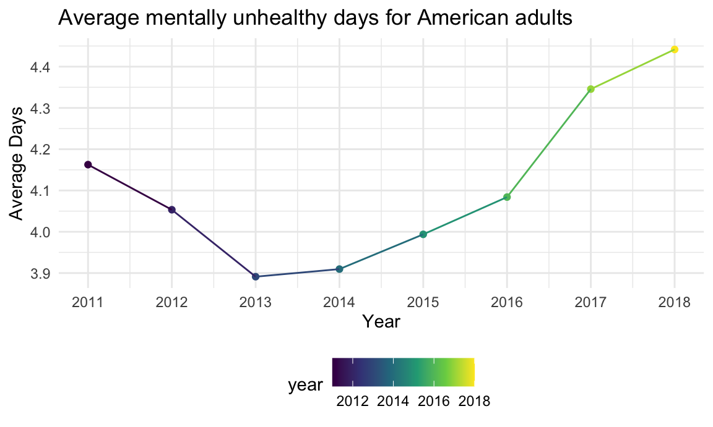
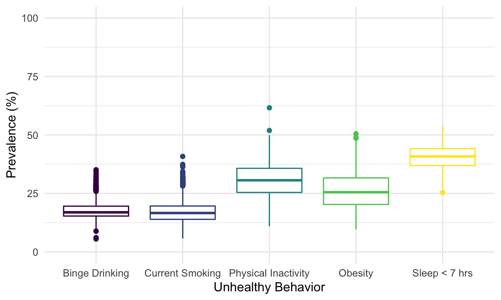
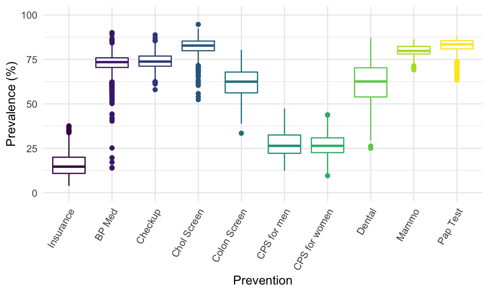
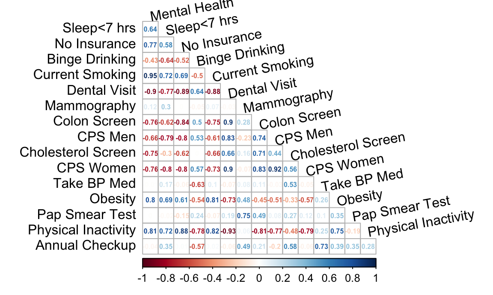
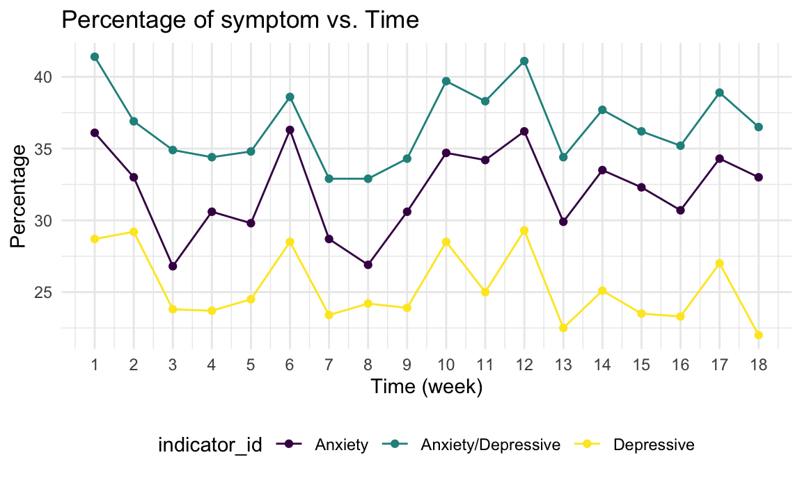
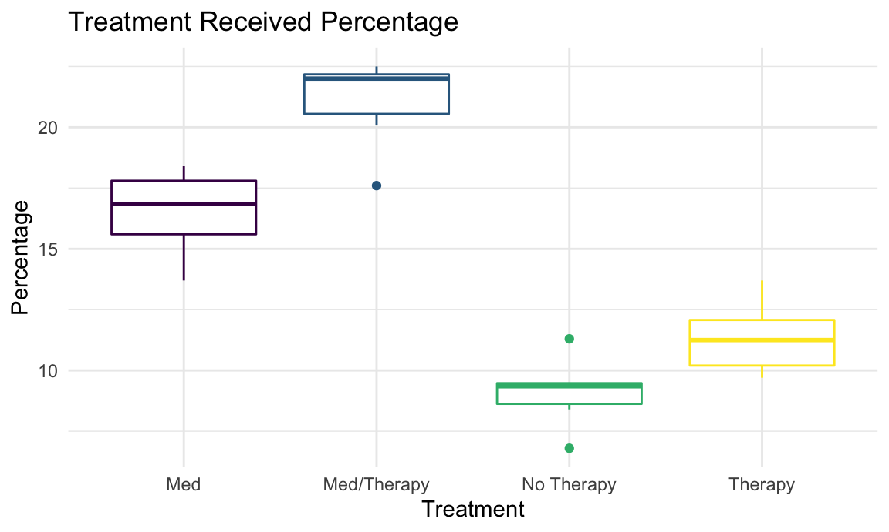
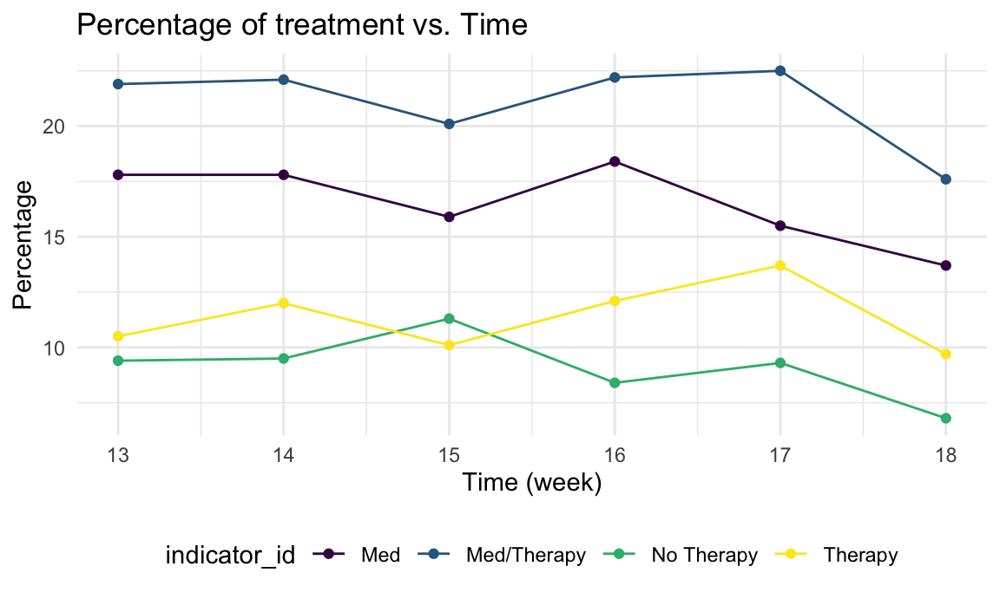

The Mental Health Project Report
Danyang Gui, Jingyi Zhang, Zihan Yu, Kexin Sun, Yining Xiang
December 5, 2020
Motivation
Mental health disorders, including clinical depression, manic depression, schizophrenia, and obsessive-compulsive disorder, account for several of the top causes of disability in the United States and worldwide. An estimated 26% of Americans ages 18 and older – about 1 in 4 adults – suffers from a diagnosable mental disorder in a given year. As residents-to-be, we are collectively interested in investigating the risk factors that contribute to mental health disorders in New York State and hopefully providing some insightful analysis on mental health related concerns in this COVID-19 era. *Cited from JHU Medicine

Goals of our project
Initial Questions
It is shown in the plot below that the average mentally unhealthy days for American adults steadily increased from 2013 to 2018. Initially, we aimed to examine the potential risk factors that may contribute to mental health problems, so we selected an appropriate dataset. Adjusting based on what can be extracted from the dataset, we decided to explore the prevalence of risk factors and also examine the correlations between risk factors and mental health problems. Under the background of COVID-19 in 2020, we would also like to find out if mental illness situation for New Yorkers was changed during the COVID-19 pandemic.
chronic_df =
read_csv("./data/Chronic_Disease_Indicators.csv") %>%
janitor::clean_names()
unhealthy_days_mean_plot =
chronic_df %>%
drop_na(data_value) %>%
mutate(year = year_start) %>%
filter(question == "Recent mentally unhealthy days among adults aged >= 18 years") %>%
group_by(year) %>%
summarise(
mean_of_mentally_unhealthy_days = mean(data_value)
) %>%
ggplot(aes(x = year, y = mean_of_mentally_unhealthy_days, color = year)) +
geom_point() +
geom_line() +
scale_x_continuous(
breaks = c(2011,2012,2013,2014,2015,2016,2017,2018)) +
labs(
title = "Average mentally unhealthy days for American adults",
x = "Year",
y = "Average Days")
unhealthy_days_mean_plot
Data
The main dataset used for this project was 500 Cities: Local Data for Better Health, 2019 release. The 500 Cities project is a collaboration between CDC, the Robert Wood Johnson Foundation, and the CDC foundation. This project includes city and census tract-level data, obtained using small area estimation methods, for 27 chronic disease measures for the 500 largest American cities. The implications of this dataset are to help develop and implement effective and prevention activities, identify emerging health problems, and establish and monitor key health objectives.
Risk factors we assessed in this project (15 total):
Unhealthy Behaviors (5):
- Binge Drinking: Adults aged ≥18 years who report having five or more drinks (men) or four or more drinks (women) on an occasion in the past 30 days.
- Current Smoking: Respondents aged ≥18 years who report having smoked ≥100 cigarettes in their lifetime and currently smoke every day or some days.
- Sleep < 7 hours: Respondents aged ≥18 years who report usually getting insufficient sleep (<7 hours for those aged ≥18 years, on average, during a 24-hour period).
- Obesity: Respondents aged ≥18 years who have a body mass index (BMI) ≥30.0 kg/m² calculated from self-reported weight and height.
- Physical Inactivity: Respondents who answered “no” to the following question: “During the past month, other than your regular job, did you participate in any physical activities or exercises such as running, calisthenics, golf, gardening, or walking for exercise?”
Prevention (10):
- Health Insurance: Respondents aged 18–64 years who report having no current health insurance coverage.
- Annual Checkup: Respondents aged ≥18 years who report having been to a doctor for a routine checkup in the previous year.
- Dental Visit: Respondents aged ≥18 years who report having been to the dentist or dental clinic in the previous year.
- Mammography: Female respondents aged 50–74 years who report having had a mammogram within the previous 2 years.
- Colorectal Cancer Screening: Fecal occult blood test, sigmoidoscopy, or colonoscopy among adults aged 50–75 years.
- Core Preventive Services for Older Men: Older adults aged ≥65 years who are up to date on a core set of clinical preventive services for men.
- Core Preventive Services for Older Women: Older adults aged ≥65 years who are up to date on a core set of clinical preventive services for women.
- Taking BP Medication: Respondents aged ≥18 years who report taking medicine for high blood pressure.
- Pap Smear Test: Female respondents aged 21–65 years who do not report having had a hysterectomy and who report having had a Papanicolaou (Pap) smear within the previous 3 years.
- Cholesterol Screening: Respondents aged ≥18 years who report having their cholesterol checked within the previous 5 years.
Besides the main dataset, we included two more datasets related to the impacts of COVID-19 on mental health. Those two datasets can be accessed through Indicators of Anxiety or Depression COVID-19 and Mental Health Care COVID-19.
Both datasets are part of the Household Pulse Survey which is launched by the U.S. Census Bureau, in collaboration with five federal agencies. The purpose of this survey is to collect data on the social and economic impacts of COVID-19 on American households.
All datasets used for this project can be downloaded at Github project repo, in the data folder.
Exploratoy Analysis
Load and tidying the datasets
ny_local =
read_csv("./data/ny_local.csv")
covid_symptom_df =
read_csv("./data/Anxiety_Depression.csv") %>%
janitor::clean_names() %>%
filter(state == "New York") %>%
mutate(
indicator_id = case_when(
indicator == "Symptoms of Anxiety Disorder" ~ "Anxiety",
indicator == "Symptoms of Anxiety Disorder or Depressive Disorder" ~ "Anxiety/Depressive",
indicator == "Symptoms of Depressive Disorder" ~ "Depressive"
))
mental_care_df =
read_csv("./data/Mental_Health_Care.csv") %>%
janitor::clean_names() %>%
filter(state == "New York") %>%
mutate(
indicator_id = case_when(
indicator == "Needed Counseling or Therapy But Did Not Get It, Last 4 Weeks" ~ "No Therapy",
indicator == "Received Counseling or Therapy, Last 4 Weeks" ~ "Therapy",
indicator == "Took Prescription Medication for Mental Health And/Or Received Counseling or Therapy, Last 4 Weeks" ~ "Med/Therapy",
indicator == "Took Prescription Medication for Mental Health, Last 4 Weeks" ~ "Med"
)
)For this project, we used the complete dataset of the 500 Cities project 2019 release. It contains information recorded from 2016-2017. We filtered the original dataset so that it includes data for New York state only. The filtered dataset was named as ny_local, it was saved as a csv file and uploaded to the project repository on Github.
The ny_local dataset contains 24 columns and 70133 rows. There were 141486 missing values in the dataset. Majority of these NAs were not in the main variables of interest. Thus, we decided to keep those values for plots and remove them for statistical analysis.
The indicators of Anxiety or Depression dataset was named as covid_symptom_df and the Mental Health Care dataset was named as mental_care_df. We also filtered the datasets for New York state only.
The covid_symptom_df contains 13 columns and 54 rows. The mental_care_df contains 14 columns and 24 rows. There were 24 missing values in the dataset. Since the missing values were not in the variables of interest, we decided to keep them.
500 Cities dataset
We first looked at the overall prevalence for each unhealthy behaviors (5) and prevention (10). Risk factor with high prevalence in NY state were “Sleep < 7 hours”, “Physical Inactivity”, “Taking BP Med”, “Annual Checkup”, “Cholesterol Screening”, “Mammography”, and “Pap Smear Test”. Risk factor with low prevalence in NY state were “Binge Drinking”, “Current Smoking”, and “Lack of Health Insurance”. Generally speaking, screening and tests had relative high prevalence in NY state. However, there was a high prevalence of not getting enough sleep for NY state residents.
ub_overall_plot =
ny_local %>%
select(category, measure_id, data_value) %>%
filter(category == "Unhealthy Behaviors") %>%
ggplot(aes(x = measure_id, y = data_value, color = measure_id)) +
geom_boxplot() +
labs(
x = "Unhealthy Behavior",
y = "Prevalence (%)"
) +
scale_y_continuous(limits = c(0, 100)) +
theme(legend.position = "none") +
scale_x_discrete(labels = c("Binge Drinking", "Current Smoking", "Physical Inactivity", "Obesity", "Sleep < 7 hrs"))
prevention_plot =
ny_local %>%
filter(category == "Prevention") %>%
select(measure_id, data_value) %>%
group_by(measure_id) %>%
ggplot(aes(x = measure_id, y = data_value, color = measure_id)) +
geom_boxplot() +
labs(
x = "Prevention",
y = "Prevalence (%)") +
scale_y_continuous(limits = c(0, 100)) +
scale_x_discrete(labels = c("Insurance", "BP Med", "Checkup", "Chol Screen", "Colon Screen", "CPS for men", "CPS for women", "Dental", "Mammo", "Pap Test")) +
theme(axis.text.x = element_text(angle = 60, hjust = 1), legend.position = "none")
ub_overall_plot
prevention_plot
Making scatterplots for risk factors
We plotted the prevalence of each unhealthy behaviors and prevention vs. mental health prevalence across NY state in 2016-2017.
Interactive plots can be viewed here:
Page 1 – Unhealthy Behaviors
Page 2 – Prevention
Making animated scatterplots with regression line
library(ggplot2)
library(gganimate)
library(transformr)
ny_local_variable =
ny_local %>%
filter(short_question_text %in% c("Obesity", "Physical Inactivity", "Sleep <7 hours", "Current Smoking", "Binge Drinking", "Health Insurance", "Annual Checkup", "Cholesterol Screening", "Colorectal Cancer Screening", "Pap Smear Test", "Dental Visit", "Taking BP Medication", "Mammography", "Core preventive services for men", "Core preventive services for women")) %>%
droplevels() %>%
mutate(
risk_factor = short_question_text,
risk_value = data_value) %>%
select(risk_factor, risk_value, unique_id, population_count)
ny_mental =
ny_local %>%
filter(short_question_text == "Mental Health") %>%
droplevels() %>%
mutate(
mental_value = data_value
) %>%
select(mental_value, unique_id)
ny_mental_combined =
left_join(ny_local_variable, ny_mental)
p = ny_mental_combined %>%
ggplot(aes(x = mental_value, y = risk_value, frame = risk_factor)) +
geom_point(aes(size = population_count, color = risk_factor), alpha = 0.5) +
geom_smooth(aes(group = risk_factor), method = "lm", se = TRUE, color = "red", size = 0.5) +
labs(
title = "{closest_state}",
x = "Mental Health Prevalence (%)",
y = "Risk Factor Prevalence (%)",
color = "Risk Factor"
) +
scale_y_continuous(limits = c(0, 100)) +
theme(plot.title = element_text(size = 35),
axis.text = element_text(size = 18),
axis.title = element_text(size = 18)) +
theme(legend.position = "none") +
transition_states(risk_factor, transition_length = 1, state_length = 3, wrap = TRUE) +
enter_fade() +
exit_fade()
animate(p, fps = 2, height = 600, width = 1000)
Making correlation plot for risk factor and mental health
For this plot, we filtered the geographic level to “Census Track” only.
library(corrplot)
# Census Tract r
ny_local_wide_census =
ny_local %>%
filter(state_desc == "New York",
geographic_level == "Census Tract",
!is.na(data_value),
measure_id %in% c("MHLTH", "ACCESS2", "BINGE", "BPMED", "OBESITY", "CHECKUP",
"CHOLSCREEN", "CSMOKING", "COLON_SCREEN", "DENTAL",
"LPA", "MAMMOUSE", "PAPTEST", "SLEEP", "COREW", "COREM")) %>%
droplevels() %>%
select(unique_id, population_count, data_value, short_question_text) %>%
pivot_wider(
names_from = short_question_text,
values_from = data_value) %>%
janitor::clean_names()
# Make the correlation plot
ny_local_wide_census %>%
select(everything(), -unique_id, -population_count) %>%
select(mental_health, everything()) %>%
rename("Mental Health" = mental_health,
"Binge Drinking" = binge_drinking,
"Sleep<7 hrs" = sleep_7_hours,
"Obesity" = obesity,
"Physical Inactivity" = physical_inactivity,
"Current Smoking" = current_smoking,
"No Insurance" = health_insurance,
"Annual Checkup" = annual_checkup,
"Cholesterol Screen" = cholesterol_screening,
"Dental Visit" = dental_visit,
"Take BP Med" = taking_bp_medication,
"Mammography" = mammography,
"Pap Smear Test" = pap_smear_test,
"Colon Screen" = colorectal_cancer_screening,
"CPS Men" = core_preventive_services_for_older_men,
"CPS Women" = core_preventive_services_for_older_women) %>%
cor(use = "complete.obs") %>%
corrplot(method = "number", type = "lower", diag = FALSE, addCoef.col = "grey", tl.col = "black", tl.srt = 10, insig = "blank", number.cex = .5)
Pearson Correlation Coefficient:
Unhealthy Behaviors:
- Binge Drinking – r = -0.43
- Current Smoking – r = 0.95
- Sleep < 7 hours – r = 0.64
- Obesity – r = 0.8
- Physical Inactivity – r = 0.81
Prevention:
- No Health Insurance – r = 0.77
- Annual Checkup – r = -0.04
- Dental Visit – r = -0.9
- Mammography – r = 0.12
- Colorectal Cancer Screening – r = -0.76
- Core Preventive Services for Older Men – r = -0.66
- Core Preventive Services for Older Women – r = -0.76
- Taking BP Medication – r = -0.01
- Pap Smear Test – r = 0
- Cholesterol Screening – r = -0.75
COVID-19 datasets
Interactive plots can be viewed here:
Page 3 – Impacts of COVID-19 on mental health
Making line plots for anxiety/depression symptom vs. time
covid_symptom_df %>%
ggplot(aes(x = time_period, y = value, color = indicator_id)) +
geom_point() +
geom_line() +
scale_x_continuous(
limits = c(1, 18),
breaks = seq(1, 18, 1)
) +
labs(
title = "Percentage of symptom vs. Time",
x = "Time (week)",
y = "Percentage"
)
Making boxplots for treatment received vs. time
mental_care_df %>%
ggplot(aes(x = indicator_id, y = value, color = indicator_id)) +
geom_boxplot() +
labs(
title = "Treatment Received Percentage",
x = "Treatment",
y = "Percentage"
) +
theme(legend.position = "none")
Making line plots for treatment received vs. time
mental_care_df %>%
ggplot(aes(x = time_period, y = value, color = indicator_id)) +
geom_point() +
geom_line() +
labs(
title = "Percentage of treatment vs. Time",
x = "Time (week)",
y = "Percentage"
)
Findings
From the analysis of 500 Cities dataset, we found:
Correlation Coefficient:
In general, we observed that unhealthy behaviors had a positive correlation with mental health except for “Binge Drinking”. Similar trend observed for prevention which had either a negative or no correlation with mental health except for “No Health Insurance”.
We considered r > |0.6| as a strong positive or negative correlation.
Within all 15 risk factors, we found these risk factors had a strong, positive correlation with mental health:
- Current Smoking
- Obesity
- Physical Inactivity
- No Health Insurance
We found these risk factors had a strong, negative correlation with mental health:
- Dental Visit
- Colorectal Cancer Screening
- Core Preventive Services for Older Women
- Cholesterol Screening
We found these risk factors had no correlation with mental health:
- Annual Checkup
- Mammography
- Taking BP Medication
- Pap Smear Test
From the analysis of COVID-19 datasets, we found:
From April 23nd to November 9th, the percentage of “experiencing anxiety or depression mood” was higher than the percentage of “experiencing anxiety only or depression only”. All three lines were at the highest at week 1 (April 23rd-May 5th), at the lowest around week 7 or 8 (June 11th-June 23rd).
From August 19th to November 9th, the percentage of “medication or therapy treatment” was higher than the percentage of “medication only, therapy only, or no therapy”.
From August 19th to November 9th, the percentage of all treatments except for “therapy only” were at the highest at week 1 (August 19th-August 31st), at the lowest at week 18 (October 28th-November 9th). The percentage for “therapy only” were at the highest at week 17 (October 14th-October 26th), at the lowest at week 18 (October 28th-November 9th)
Additional Analysis
NY Map: Adopting from what we’ve learned in class, we also demonstrated the geographic distribution of measures under three different categories using the shinyApp and leaflet package, with prevalence shown. Among the eight cities (Buffalo, New York, New Rochelle, Mount Vernon, Albany, Syracuse, Rochester, Yonkers, Schenectady) in the New York state that has entries recorded in this dataset, NYC takes up 6/7 of total entries. No wonder thickly dotted pattern centered at in NYC. Under health outcome category, high cholesterol has high prevalence, while coronary heart disease and stroke have low prevalence in NYC. As for prevention, it was delighted to see that New York State residents have high awareness in certain prevention measures such as routine checkup, dentist visiting, and mammography use.
Discussion
Through detailed analysis including exploratory data analysis, visualization, correlation analysis, and shiny map, we have gained these insights regarding risk factors associated with mental health:
Unhealthy behaviors such as “Current Smoking”, “Obesity”, and “Physical Inactivity” were found to be strong, positive correlated with mental health. “No Health Insurance”, one of the prevention, also had a strong, positive correlation with mental health. For unhealthy behaviors, it can be managed, changed or improved through intervention programs on individual level. Policy makers such as the government or public health officials may be helpful to solve the “No Health Insurance” situation.
Prevention such as “Dental Visit”, “Colorectal Cancer Screening”, “Core Preventive Services for Older Women”, and “Cholesterol Screening” were found to be strong, negative correlated with mental health. Interestingly, “Binge Drinking”, one of the unhealthy behaviors, was found to be negative correlated with mental health. We should encourage people to participate in these prevention since they may help to reduce the risk of developing mental illness. However, we may need to look into more research or studies on the correlation of “Binge Drinking” and mental health. In fact, most studies agree that “Binge Drinking” induces mental illness, for instance, this paper has some discussion on Alcoholism and Psychiatric Disorders.
From the analysis of two COVID-19 datasets, we found that mental illness such as depression and anxiety were extremely prevalent during the COVID-19 pandemic. It will be more interesting to have datasets that investigate some risk factors related to COVID-19 may be correlated with mental health. However, we didn’t find any open dataset to be used for this project. Some possible risk factors may be related to mental health issues during the pandemic are social distancing, physical inactivity, unemployment, and so on.